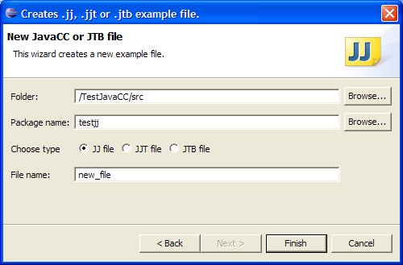
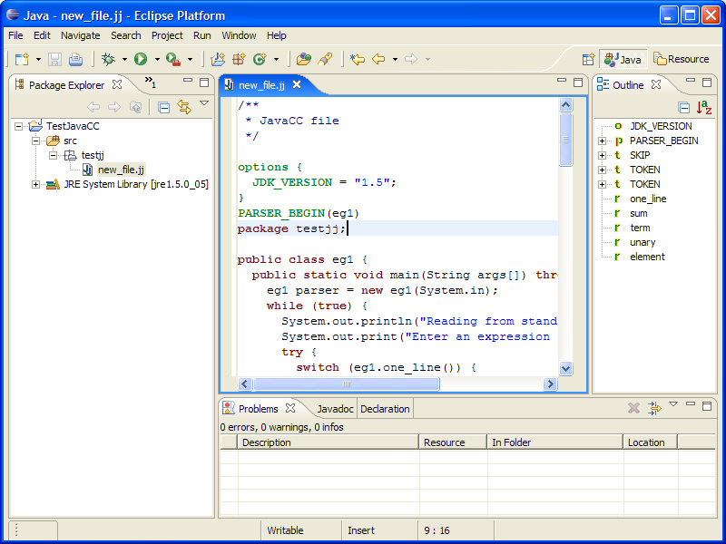
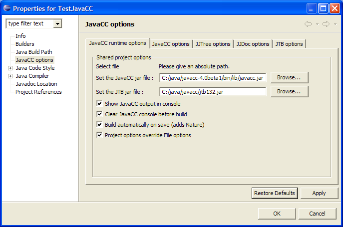
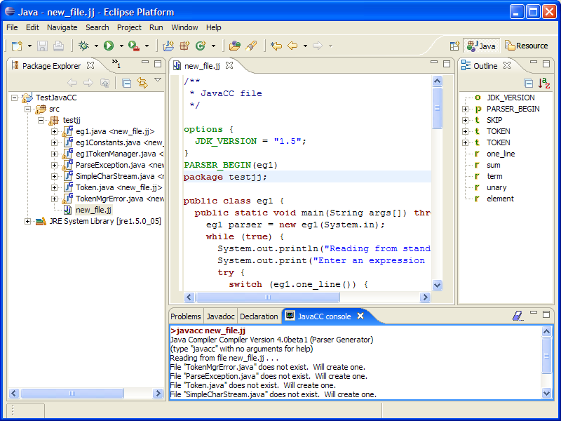
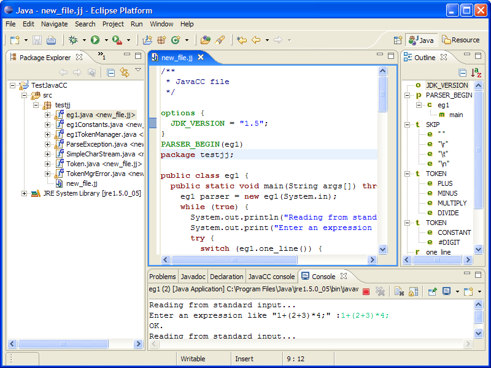
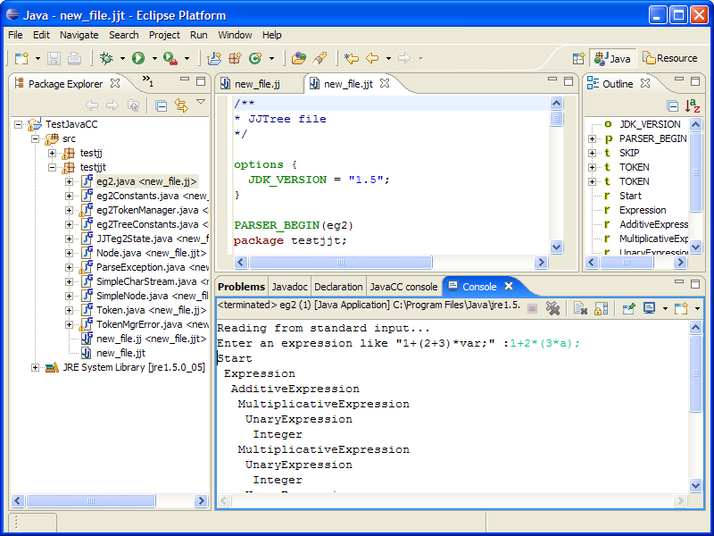
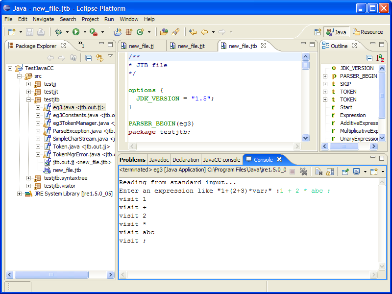

JavaCC plugin is designed to help development of JavaCC
applications.
This plugin provides a set of features, including :
1) To install unzip "rk.eclipse.javacc.1.3.zip" in the "plugins" directory of Eclipse
2) Launch Eclipse
3) Create a new Java Project :
Menu : "File" -> "New" -> "Project..."->
"Java Project"
For the example create a "TestJavaCC" project.
Select "Create separate source and output folders" to
get a "src" folder.
Create a package "testjj".
4) Create a new JavaCC file :
Select the "testjj" package and Menu "File" -> "New" -> "Other..."
Select Wizard "JavaCC" -> "JavaCC Template file"

Leave defaults for a quick start.
5) You have now a new JavaCC file :
To compile you must indicate where your JavaCC is located.
See next step.

6) Set Properties for the project :
Select project "TestJavaCC" and right clic ->
"Properties"
Indicate the path to javacc.jar. (which is in
the "bin/lib/" directory of your JavaCC distribution)
Select "Restore Defaults" to get an hint.
Here I use JavaCC version 4.0beta1 (the plugin works also with JavaCC
2.1, 3.0, 3.1, 3.2).

7) Compile new_file.jj
If you checked "Build automatically on save"
the files should have been already generated.
If not, you can right click on the file in the Package Explorer (or
Navigator) and select "Compile with JavaCC".
Note that :
- the generated files are decorated with a "G"
and a "<from.jj>" to indicate
the .jj file they are from,
- there may be warnings from the Java Compiler (Eclipse don't
like JavaCC generated code),
you can get rid of them selecting "ignore"
in the java compiler options for "Non-static access to
static member:"
- the JavaCC console opens automatically.

8) Run the example :
Select "TestJavaCC" and menu "Run"->
"Run as..." -> "Java application"
Choose "eg1" for the main type.
You can now test your JavaCC application :

You can do the same with the template for JJTree :

and also with the template for JTB:
